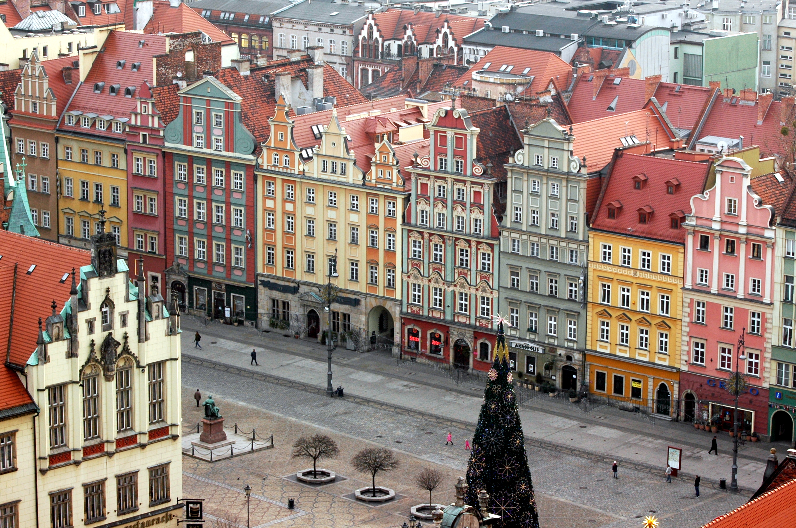

Discover Wrocław as never before
Explore the hidden gems and rich history of Poland's most beautiful city

Our Tours
Historical Walking Tour
Explore Wrocław's 1000-year history with our expert local guides
Food & Culture Tour
Taste authentic Polish cuisine and learn about local traditions
Private Group Tours
Customized experiences for families, friends, and corporate groups
Photography Tours
Capture the most Instagram-worthy spots in Wrocław

About Our Tours
We are passionate about sharing the hidden stories and unique experiences that make Wrocław special. Our local guides combine historical knowledge with insider tips to deliver unforgettable adventures.
From traditional beer tastings to mysterious ghost walks, we offer authentic experiences that show you the real Wrocław beyond the tourist trails.